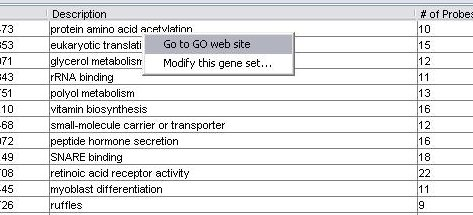

To run an analysis, choose "run analysis" from the analysis menu.
The first screen you are presented with is this one:
Choose the type of analysis you want to do. Directions on the specific types of analysis are available:
(the rest of this tutorial assumes you have run some analysis using the directions)
When you are done with an analysis, the output panel will show the results. Here is the output panel after an analysis. Note that the "# of probes" and "# of genes" columns show how many probe and genes are on the array design, not necessarily the number represented in your data. Please read this note for more explanation.

Note how the results of each run are show in columns after the standard four. Each value is the p value associated with the gene set for that run.
If you hold the mouse over a p-value for a gene set, a tool tip will be displayed that shows additional information, including the correct number of probes and genes for the gene set as represented in the data you used.
The colors indicate classes that passed a multiple test correction. Read details here.
You can delete a run by right-clicking on its column heading and selecting "delete this run".
You can double-click on a row to get the details for a gene set. For example, to view the details for run 2, "response to hypoxia", click on the cell in the "Run 2 Pval" column on the "response to hypoxia" row. The window you get is explained here.
By right-clicking on a row, you will get a pop-up menu. The first item on this menu should open a web browser showing the Amigo web page for the gene set selected.

The other menu item allows you to view or modify the gene set.